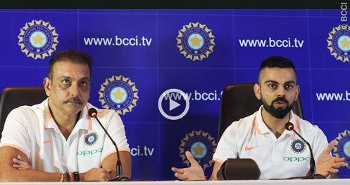

I am 100% fit & ready to go: Virat Kohli
Back after a break due to injury, the Indian Captain is looking forward to the UK tour.
Head Coach Ravi Shastri believes playing shorter formats is ideal preparation for the Test series
Back after a break due to injury, the Indian Captain is looking forward to the UK tour.
Head Coach Ravi Shastri believes playing shorter formats is ideal preparation for the Test series